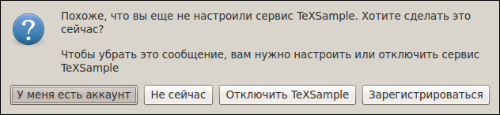
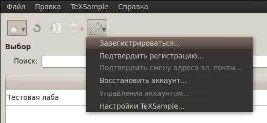
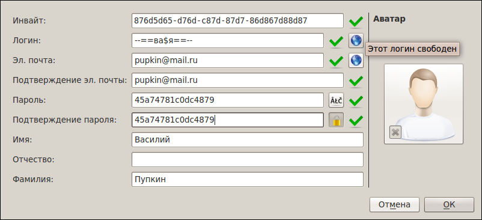
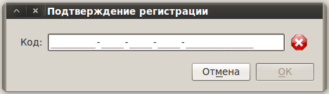
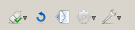
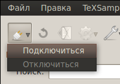

[Назад: 1. Начало работы]
[Далее: 1.2. Управление аккаунтом и восстановление]
Регистрация
Первый запуск
При первом запуске CloudLab Client выводится сообщение следующего вида:

Так как CloudLab Client работает через интернет с удаленным сервером, то необходимо зарегистрироваться, либо, если у
вас уже есть аккаунт, указать соответствующие данные.
Выбор У меня есть аккаунт предполагает, что вы уже ранее зарегистрировались в TeXSample (например, на другом
компьютере). В таком случае будет открыт диалог настройки TeXSample (см.
настройки TeXSample). При выборе же Зарегистрироваться
будет открыт диалог регистрации, который описан ниже.
Если вы не настроили TeXSample сразу, это всегда можно сделать во время работы программы, воспользовавшись меню
TeXSample, либо нажав на соответствующую кнопку и выбрав пункт Зарегистрироваться...:

Регистрация
Диалог регистрации выглядит следующим образом:

При регистрации необходимо ввести полученный от администратора инвайт-код, выбрать логин, указать свой адрес
электронной почты, а также задать пароль. Остальные поля не являются обязательными, но при желании их можно заполнить.
Также можно выбрать аватар (его ширина и высота не должны
превышать 2048 пикселов).
Примечание: логин и адрес
электронной почты должны быть уникальны (не может быть двух пользователей с одинаковым логином или адресом электронной
почты). Проверить, не занят ли логин/адрес, можно при помощи кнопок с изображением глобуса, находящихся справа от
соответствующих полей.
Для подтверждения регистрации необходимо нажать кнопку ОК.
Подтверждение регистрации
После того, как запрос на регистрацию был принят сервером, на вашу электронную почту должно придти письмо с кодом
подтверждения. В диалоговом окне, открывшемся после завершения регистрации, необходимо ввести этот код. Срок действия
кода - 24 часа. По истечение срока действия регистрация отменяется (аккаунт будет удален, а логин и адрес электронной
почты снова станут свободными для использования).

Если вы по какой-то причине не подтвердили регистрацию сразу, это можно сделать в течение 24 часов, открыв
соответствующий диалог и введя код подтверждения. Для этого выберите пункт Подтвердить регистрацию... в меню
TeXSample.
Подключение
После регистрации, если процесс прошел успешно, вы будете автоматически подключены к серверу. Также, если не отключена
опция автоматического подключения при запуске, клиент будет соединяться с сервером при каждом запуске TeX Creator.
В подключенном состоянии окно TeXSample выглядит следующим образом:

Отключиться или подключиться всегда можно вручную, воспользовавшись пунктами Подключиться или Отключиться
меню TeXSample, либо выбрав соответствующий пункт в меню кнопки на окне TeXSample:

[Назад: 1. Начало работы]
[Далее: 1.2. Управление аккаунтом и восстановление]